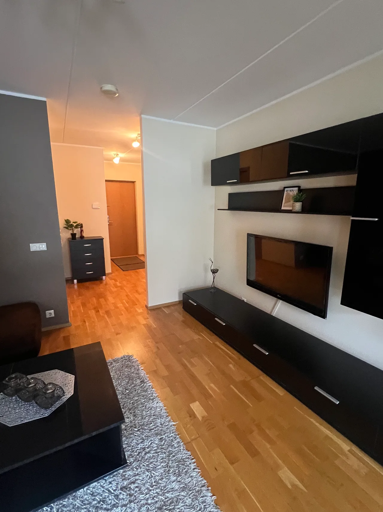
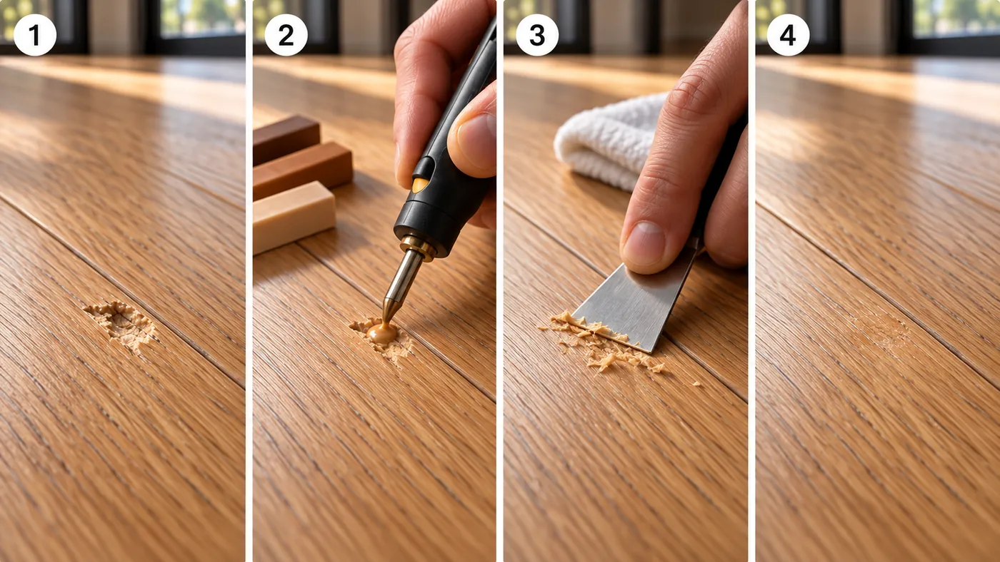
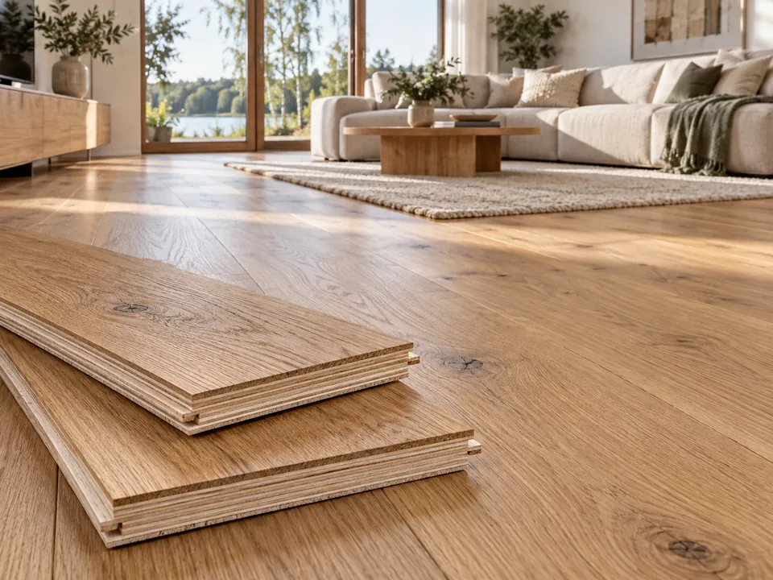
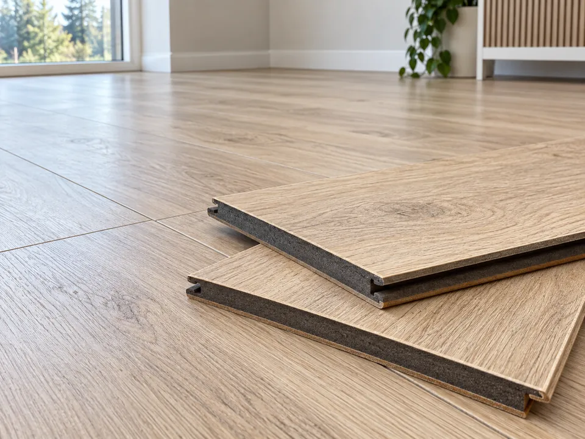
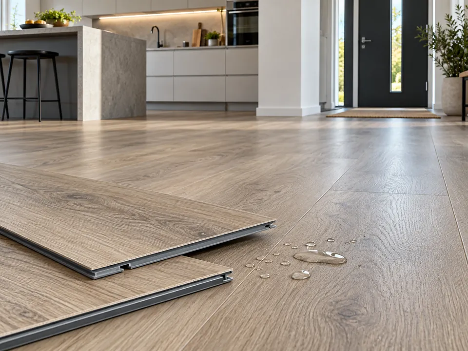
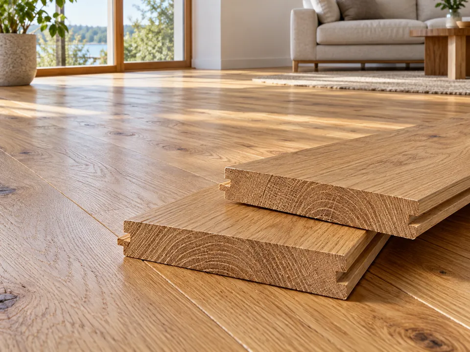

Parketitööd Tallinnas ja Harjumaal
Parketi ja laminaadi paigaldus, aluspinna ettevalmistus, liistud ning üksikute täkete kohtparandus.

Hea põrand algab tasasest ja stabiilsest aluspinnast. Enne töö alustamist kontrollime olemasoleva põranda seisukorda, ruumi kõrgusi, ukseavasid ja üleminekuid. Nii saab varakult selgeks, kas vana kate tuleb eemaldada ja kas aluspind vajab parandamist või tasandamist.
Paigaldame laudparketti ja laminaati korterites, eramutes ning äriruumides. Töö juurde saab tellida põrandaliistud, üleminekuprofiilid ja vajalikud lõiked. Kui põrand on muidu heas seisukorras, kuid sellel on üksikud täkked või sügavad kriimustused, võib kogu põranda vahetamise asemel piisata kohalikust kuumvahaparandusest.
Millise põrandatööga saame aidata?

Aluspinna kontroll ja ettevalmistus
Kontrollime tasasust ja stabiilsust ning hindame, kas vana kate tuleb eemaldada. Vajadusel lepime kokku puhastuse, paranduse või tasanduse enne uue põranda paigaldamist.

Parketi ja laminaadi paigaldus
Paigaldame põrandakatte tootja juhiste järgi, jätame vajalikud paisumisvuugid ning lahendame ukseavad, torude ümbrused ja üleminekud teiste põrandakatetega.

Liistud ja detailide viimistlus
Paigaldame põrandaliistud ja üleminekuprofiilid, kontrollime uste liikumist ning lõpetame servad nii, et tulemus oleks puhas ja kasutusvalmis.

Täkete parandus kuumvahaga
Üksiku täkke, lohu või sügavama kriimustuse saab sageli täita parketi tooniga sobiva kõvavahaga, ilma et kogu põrandat peaks üles võtma.
Milline põrandakate valida?
Valik sõltub ruumi niiskuskoormusest, kasutussagedusest, aluspõrandast, põrandaküttest ja sellest, kas eelistad naturaalset puitu või võimalikult lihtsat hooldust.
Laudparkett
Naturaalse puidu soe välimus sobib hästi elutuppa ja magamistuppa. Kvaliteetset laudparketti saab sõltuvalt kulumiskihi paksusest hiljem hooldada või lihvida. Seisvat vett ja suuri niiskuse kõikumisi tuleb vältida.

Laminaat
Kulumiskindel ja lihtsasti hooldatav valik eluruumidesse. Kööki või esikusse vali tootja poolt niiskuskindlaks märgitud laminaat ning järgi vuukide ja servade tihendamise juhiseid.

LVT- või vinüülpõrand
Talub niiskust hästi ning sobib seetõttu sageli kööki, esikusse ja suurema koormusega ruumi. Kogu põrandalahenduse veekindlus sõltub konkreetsest tootest, ühendustest ja paigaldusest. Aluspind peab olema eriti sile.

Täispuit
Pika elueaga ja korduvalt taastatav materjal kuiva ning stabiilse sisekliimaga ruumi. Täispuit reageerib õhuniiskuse muutustele rohkem kui kihiline laudparkett, mistõttu tuleb paigaldusviis ja põrandakütte sobivus alati üle kontrollida.

Põrandakütte puhul vaata alati tootja lubatud soojustakistust, maksimaalset pinnatemperatuuri ja paigaldusjuhendit. Kõik parketid, laminaadid ega LVT-tooted ei sobi automaatselt igale küttesüsteemile.
Mida kontrollida enne laminaadi paigaldamist?
Laminaadi vastupidavus sõltub sama palju ettevalmistusest kui materjalist. Enne paigaldust kontrollime tootja juhendit, ruumi tingimusi ja kogu põrandakonstruktsiooni.
Materjali aklimatiseerimine
Pakendid hoitakse enne paigaldust samas ruumis tootja määratud aja ja tingimuste järgi. Paljude laminaatide puhul on tavapärane vähemalt 48 tundi, kuid määrav on alati konkreetse toote juhend.
Aluspõranda seisukord
Aluspind peab olema tasane, tugev, puhas ja kuiv. Mineraalse aluspinna niiskust tuleb vajadusel mõõta; tolm, lahtised osad ja liigne ebatasasus võivad põhjustada naginat, liikumist või ühenduste kahjustumist.
Alusmaterjal ja niiskustõke
Alusmaterjal valitakse põrandakatte, aluspinna, heliisolatsiooni ja põrandakütte järgi. Betooni või muu mineraalse aluspinna puhul võib olla vajalik eraldi aurutõke või integreeritud niiskustõkkega aluskate.
Paisumisruum ja rasked esemed
Ujuv põrand peab saama temperatuuri ja õhuniiskuse muutudes liikuda. Tootja nõutud vahe jäetakse seinte, torude, lävepakkude ja muude fikseeritud osade ümber; köögisaar või muu väga raske püsikonstruktsioon ei tohi põrandat kinni suruda.
Paigaldussuund, materjalivaru ja viimistlus
Paigaldussuund valitakse ruumi kuju, valguse, läbikäikude ja põrandamustri järgi. Materjalivaru sõltub ruumi nurkadest ning paigaldusmustrist, mistõttu ei ole üks protsent õige igale objektile. Enne alustamist kontrollime ka ukselehtede liikumist, viimistlusprofiile ja üleminekuid.
Valmis laminaati ei lihvita, õlitata ega lakita. Töö lõpetatakse sobivate liistude ja profiilidega nii, et vajalikud paisumisvuugid jäävad toimima.
Kas parandada või paigaldada uus põrand?
Kohalik parandus sobib, kui
- kahjustatud on üksikud väikesed kohad;
- põrand on stabiilne ja üldiselt heas seisukorras;
- probleem on täke, lohk, servakahjustus või sügav kriimustus.
Uus põrand või suurem taastamine on mõistlikum, kui
- kahjustusi või kulunud viimistlust on kogu ruumis;
- lauad liiguvad, nagisevad või ühendused on katki;
- põrand on niiskuse tõttu paisunud või deformeerunud.
Kuidas töö käib?
1. Fotod ja lähteinfo
Saada ruumi üldvaated, lähivõtted aluspinnast või kahjustusest, põranda pindala, materjali tüüp, objekti asukoht ja soovitud aeg.
2. Ülevaatus ja pakkumine
Kui fotodest ei piisa, vaatame objekti kohapeal üle. Pakkumises paneme kirja töö mahu, ettevalmistuse, hinna ja eeldatava ajakulu.
3. Ettevalmistus ja paigaldus
Kaitseme kõrvalpinnad, valmistame aluspinna ette ning paigaldame põranda kokkulepitud suuna, vuukide ja detailidega.
4. Viimistlus ja üleandmine
Paigaldame liistud, kontrollime üleminekuid ja uksi, koristame tööala ning anname ülevaate uue põranda kasutamisest.
Parketitööde hinnad
- parketi paigaldus ujuvalt alates 13 €/m²;
- kalasabaparketi paigaldus liimimisega alates 25 €/m²;
- laminaatparketi paigaldus alates 9 €/m²;
- põrandaliistu paigaldus alates 5 €/jm.
Lõplik hind sõltub aluspinna seisukorrast, ruumi kujust, lõigete ja ukseavade arvust, liistudest, üleminekutest ning sellest, kas vana kate tuleb eemaldada. Kohtparanduse hind sõltub kahjustuste arvust, suurusest ja toonide sobitamise keerukusest.
Vaata põrandatööde hinnakirja või saada fotod, mõõdud ja töö kirjeldus, et saaksime teha täpsema pakkumise.
Mida enne töö algust arvestada?
Põrandamaterjal peab enne paigaldust ruumi tingimustega kohanema. Märjad ja tolmused remonditööd peaksid olema lõpetatud ning ruumi temperatuur ja niiskus stabiilsed. Materjali tellimisel tuleb arvestada lõigete ja praagivaruga, mille suurus sõltub ruumi kujust ja paigaldusmustrist.
Anna päringus teada, kas mööbel jääb ruumi, kas vana põrand tuleb eemaldada ja ära vedada ning millal peab ruum uuesti kasutatav olema. Need detailid mõjutavad tööjärjekorda ja ajakulu.
Parketipaigalduse tööprotsess
Aluspinna kontrollist valmis põrandani: allolevad pildid illustreerivad paigalduse nelja etappi.
1. Aluspinna kontroll

2. Paigaldussuuna valik
3. Parketi paigaldamine
4. Servade ja üleminekute viimistlus
Genereeritud tööprotsessi illustratsioonid.
Põrandakütte ja paigaldusmaterjalide sobivus
Alusmaterjal ei tasanda kõiki vigu
Alusvaip valitakse põrandakatte lukusüsteemi, koormuse ja põrandakütte järgi. Liiga pehme või paks alus võib lukke koormata. Betooni niiskuskaitse vajadus lahendatakse tootja juhendi järgi; alusmaterjal ei asenda põranda tasandamist.
Põrandaküte ja niiskus
Kontrollime katte ning alusmaterjali lubatud soojustakistust ja kütterežiimi. Näiteks Quick-Stepi mitme tootesarja juhendis on kontaktpinna piir 27 °C; seda ei saa automaatselt laiendada kõikidele parkettidele. Mõõdame aluspinna niiskust ning järgime konkreetse katte piirväärtusi.
Liimpaigaldus ja hooldus
Liimitud parketi jaoks valitakse aluspinna, krundi ja puiduga sobiv põrandaliim. Ujuvpaigalduseks mõeldud laminaati ei liimita omal algatusel aluspinnale. Õlitatud ja lakitud puit vajavad erinevaid hooldusvahendeid; hoidume märjast pesust ning kasutame mööbli all kaitsevildid.
Enne paigaldust: Saada põrandakatte täpne tootenimi, ruumi mõõdud, olemasoleva aluse kirjeldus ja info põrandakütte kohta. Nii saame hinnata tasandust, lävepakke ning uste vaba liikumist enne materjali tellimist.
Korduma kippuvad küsimused
Kas vana põrand tuleb enne eemaldada?
Mitte alati. Otsus sõltub vana katte stabiilsusest, kõrgusest ja aluspinna seisukorrast. Liikuv, niiske või tugevalt ebatasane põrand tuleb enne uue katte paigaldamist korda teha.
Milline põrandakate sobib kööki või esikusse?
Hea valik võib olla niiskust hästi taluv LVT või tootja poolt niiskuskindlaks märgitud laminaat. Naturaalse parketi puhul tuleb seisvat vett vältida ja valida ruumi kasutusega sobiv pinnaviimistlus.
Kui sirge peab aluspind olema?
Aluspind peab vastama valitud põrandakatte tootja nõuetele. Liigne ebatasasus võib põhjustada õõnsat heli, naginat, põranda liikumist ja ühenduste purunemist.
Kas paigaldate ka liistud?
Jah, teeme ka põrandaliistude ja üleminekuliistude paigalduse.
Kas liistud paigaldatakse kohe pärast parketti?
Tavaliselt jah, kui seinad on valmis ja värv kuivanud. Kui seinaviimistlus jätkub, võib liistud paigaldada hiljem, et neid mitte kahjustada.
Kui suur materjalivaru tuleks arvestada?
Vajalik varu sõltub ruumi kujust ja paigaldusmustrist. Sirges lihtsa kujuga ruumis on kadu väiksem, diagonaali, kalasaba või paljude nurkade puhul suurem.
Kas üksikut täket saab parandada ilma põrandat vahetamata?
Sageli küll. Kui põrand on stabiilne ja kahjustus kohalik, saab täkke või sügavama kriimustuse täita toonitud kuumvahaga. Sobivust hindame foto järgi.
Kas tehtud töödele kehtib garantii?
Jah. Tehtud ehitus- ja viimistlustöödele kehtib 3-aastane garantii. Konkreetse töö sisu ja tingimused fikseeritakse hinnapakkumises.
Kui põrandatöö on osa suuremast remondist
Uus põrand paigaldatakse pärast tolmuseid ja märgi töid. Enne seda võib olla vaja vana põrandakatte eemaldamist; seinte lõppviimistlus ja liistude paigaldus tuleb tööjärjekorras omavahel kokku sobitada. Suurema töö puhul aitab korteri remondi ühine tööplaan vältida värskelt valminud pindade kahjustamist.